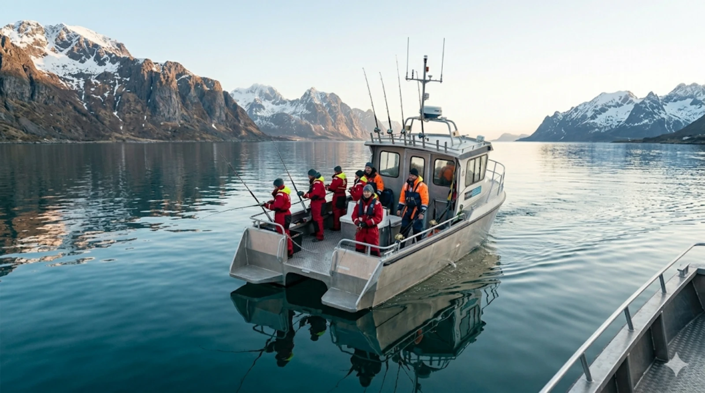

01

Fishing Tours
Cod · Halibut · Haddock
Experience world-class fishing in the rich Arctic waters around Tromsø. Meet by our vessel in the city center and sail with our crew to the best fishing spots — perfect for individuals, families, and groups. No experience required.
- Professional guide
- All fishing equipment
- Warm suits & safety gear
- Hot drinks & refreshments